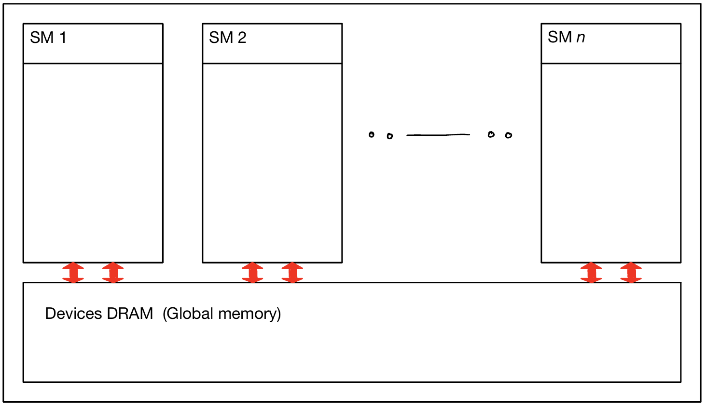
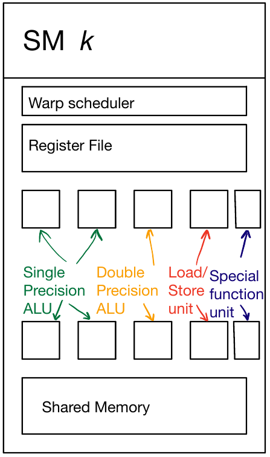

Introduction to GPU Programming
The following tutorials assume that you have have setup CUDA.jl. Detailed installation instructions can be found here.
You may check if your CUDA.jl installation is functional using
# using Pkg
# Pkg.add("CUDA")
using CUDA
CUDA.functional()trueIf CUDA.functional() returns false then the package is in a non-functional state and you should follow the documentation to get it working.
Also explained in the usage section of the CUDA.jl docs is an overview of CUDA.jl's functionality which can work at three distinct levels.
- Array Abstractions: With the help of the
CuArraytype we can use Base's array abstractions like broadcasting and mapreduce. - Native Kernels: Write kernels which compiles to native GPU code directly from Julia.
- CUDA API wrappers: Call CUDA libraries directly from Julia for bleeding edge performance.
The purpose of these tutorials is to teach you effective GPU programming. The tutorials here complement other GPU programming resources such as the NVIDIA blogs, other online resources and formal textbooks. Using other resources in your study will complement these tutorials and is highly encouraged. Some suggested resources are listed at the end of this tutorial.
A GPU (graphical processing unit) is a device specially designed for graphics work. Graphical tasks are a good candidate for parallelization and GPU's exploit it by having a large number of less powerful processors instead of a single very powerful processor. In 2007 NVIDIA released CUDA (Compute Unified Device Architecture), a parallel programming platform (hardware and software stack) which alongside graphics also focusses scientific computation. Modern GPU's are commonly called GPGPU (general purpose GPU) which shows their importance in scientific computation alongside graphics.
Programs which execute on the GPU are vastly different due to its different architecture. There are new paradigms and algorithms to learn. Understanding how a GPU works is crucial to maximizing the performance of your application.
Parallelizing AXPY
Basic Linear Algebra Subroutines(BLAS) are subroutines for Linear Algebra operations. Linear algebra's importance in scientific computing makes BLAS essential to GPU computing. One of the most primitive BLAS operations is to scale a vector and add it to another vector. Given two vectors ($x$ and $y$) and a scalar ($\alpha$) we add $\alpha\cdot x$ to $y$. In BLAS libraries this manifests as the functions SAXPY, DAXPY and CAXPY. The difference between the three is that the data type of the vectors is Float32, Float64 and Complex{Float32} respectively. However in this example we call our subroutine axpy and let Julia take care of the types.
function axpy!(A, X, Y)
for i in eachindex(Y)
@inbounds Y[i] = A * X[i] + Y[i]
end
end
N = 2^27
v1 = rand(Float32, N)
v2 = rand(Float32, N)
v2_copy = copy(v2) # maintain a copy of the original
α = rand()
axpy!(α, v1, v2)Alternatively, we can also use Julia's broadcasting syntax which allows us to write it in simpler and equally performant version.
v3 = copy(v2_copy)
v3 .+= α * v1
@show v2 == v3trueCPU multithreaded version
Consider parallelization on a CPU with p processors. We can divide our arrays into p subarrays of equal size and assign a processor to each subarray. This can theoretically make our parallel version p times faster. We say "theoretically" because there is an overhead of starting threads and synchronizing them. Our hope in parallel computing is that the cost will get amortized with the speedup of parallelization, but that may not be the case. Which is why measuring performance is extremely important. Nevertheless, the parallel version asymptotically scales linearly w.r.t p which is really good, so much so that these types of problems are classified as "embarassingly parallel". In other cases when processors need to communicate and synchronize frquently the benefit does not scale linearly with the number of processors.
We can use Julia's inbuilt multithreading functionality to use multiple CPU threads which is documented(here). You need to ensure that Julia starts with the appropriate number of threads using the environment variable or startup option(-t NUMTHREADS), instructions for which are given in the docs.
A common theme in parallel computing is the concept of thread rank or id. Each thread has a unique id/rank which helps us identify them and map them to tasks easily.
using Base.Threads
println("Number of CPU threads = ", nthreads())
# pseudocode for parallel saxpy
function parallel_axpy!(A, X, Y)
len = cld(length(X), nthreads())
# Launch threads = nthreads()
Threads.@threads for i in 1:nthreads()
# set id to thread rank/id
tid = threadid()
low = 1 + (tid - 1)*len
high = min(length(X), len * tid) ## The last segment might have lesser elements than len
# Broadcast syntax, views used to avoid copying
view(Y, low:high) .+= A.*view(X, low:high)
end
return
end
v4 = copy(v2_copy)
parallel_axpy!(α, v1, v4)
@show v2 == v4trueGPU version
Given below is the code for GPU
function gpu_axpy!(A, X, Y)
# set tid to thread rank
tid = (blockIdx().x - 1) * blockDim().x + threadIdx().x
tid > length(Y) && return
@inbounds Y[tid] = A*X[tid] + Y[tid]
return
end
# Transfer array to GPU memory
gpu_v1 = CuArray(v1)
gpu_v2 = CuArray(v2_copy)
numthreads = 256
numblocks = cld(N, numthreads)
@show numthreads
@show numblocks
# Launch the gpu_axpy! on the GPU
@cuda threads=numthreads blocks=numblocks gpu_axpy!(α, gpu_v1, gpu_v2)
# Copy back to RAM
v4 = Array(gpu_v2)
# Verify that the answers are the same
@show v2 == v4trueCompared to the CPU code there are a number of differences:
1) Thread Indexing
The multithreaded CPU code used threadid() to get the current thread's rank whereas on the GPU a complicated expression tid = (blockIdx().x - 1) * blockDim().x + threadIdx().x computed rank. Furthermore, we are using two distinct terms, blocks and threads coupled with idx(index) and Dim (dimension).
2) SIMT architecture
The multithreaded CPU code divided the array up into a handful of pieces equal to the number of processors. A modern consumer CPU has a handful of cores(4 - 8), hence each thread still works on a relatively large array whereas the GPU processes one element per thread. While both demonstrate parallelism their scales differ vastly.
Flynn's taxonomy is a popular way to classify parallel computer architectures.
| | single data | multiple data | |:––––––––––-|:––––––|:–––––––| | single instruction | SISD | SIMD | | multiple instruction | MISD | MIMD |
- SISD(single instruction single data) is the classical uniprocessor model. A single instruction stream executes, acting on a single data element at a time.
- SIMD(single instruction multiple data) incorporates a level of parallelism by having a single instruction stream acting on multiple data elements at a time. An example of this is vectorized CPU instructions which use large registers containing multiple data elements. Instructions that work with these large vector registers effectively work on multiple data elements in parallel with a single instruction by utilizing special hardware.
- MISD (multiple instruction single data) is currently only a theoretical model and no commercial machine has been built which uses it.
- MIMD (multiple instruction multiple data) is able to manage multiple instruction streams and acts on multiple data elements at the same time. The CPU multithreading model belongs to it. Each processor can work independently using a different instruction stream acting on different data as required.
To describe CUDA's parallel model NVIDIA coined the term SIMT (single instruction multiple threads) as an extention to SIMD classification. Just like a SIMD vector packs a fixed number of data elements in a wide register, a GPU packs a fixed number of threads in a single warp. Currently NVIDIA packs 32 threads in a single warp and AMD cards pack 64 threads. For more details refer to NVIDIA's docs here.
3) Memory
CPU's memory (RAM) and GPU memory are distinct and is called host (CPU) and device (GPU) memory respectively. In Julia we need to explicitly transfer memory to and from GPU memory. The reason for this is that copying memory is an expensive operation with high latency. GPU's use PCIe lanes to transfer memory to and from RAM. Poor usage of memory transfers is detrimental to performace and can easily negate all benefits of using a GPU.
Device code referencing CPU memory will result in errors. Host code referencing device memory is produces a warning.
arr = CUDA.rand(10);
arr[1]0.9164015f0To disallow scalar operations altogether use the CUDA.allowscalar() function.
CUDA.allowscalar(false)
try
arr[1]
catch e
println("Error Caught: ", e)
endError Caught: ErrorException("scalar getindex is disallowed")
To temporarily allow it in an experssion use the @allowscalar macro. However it is suggested that once your application executes correctly on the GPU, you should disallow scalar indexing and use GPU-friendly array operations instead. Accessing GPU memory in a scalar fashion is extremely detrimental to performance.
CUDA.@allowscalar arr[1]0.9164015f0A GPU also has different types of memory such as global memory, texture memory, constant memory which will be discussed later. In general what we call global memory is the GPUs DRAM which can be accessed by all threads and is what will be used most often. Memory transfers between the host and device involve the GPUs global memory.
You can check your GPU's memory using CUDA.available_memory() and CUDA.total_memory() which returns the number of bytes.
@show CUDA.available_memory()
@show CUDA.total_memory();
nothing #hideCUDA.available_memory() = 4099342336
CUDA.total_memory() = 6370426880
4) Kernel
When we used the @cuda macro, it compiled the gpu_saxpy! function for execution on the GPU. A GPU has it's own instruction set just like a CPU. The compiled function is called the kernel and is sent to the GPU for execution. Once sent we can either wait for the GPU to complete execution or work on something different while it is executing. This can be done using the blocking option.
Although CUDA's native instruction set is proprietary there are other ways to inspect code at various stages of compilation. The reflection page of the documentation should be consulted.
As an example consider PTX which resembles low level RISC-ISA like code. PTX is commonly used to inspect code and NVIDIA's PTX docs explains it well.
@device_code_ptx @cuda threads=numthreads blocks=numblocks gpu_axpy!(α, gpu_v1, gpu_v2)// PTX CompilerJob of kernel gpu_axpy!(Float64, CUDA.CuDeviceArray{Float32,1,1}, CUDA.CuDeviceArray{Float32,1,1}) for sm_61
//
// Generated by LLVM NVPTX Back-End
//
.version 6.0
.target sm_61
.address_size 64
// .globl _Z23julia_gpu_axpyNOT__35497Float6413CuDeviceArrayI7Float32Li1ELi1EES0_IS1_Li1ELi1EE // -- Begin function _Z23julia_gpu_axpyNOT__35497Float6413CuDeviceArrayI7Float32Li1ELi1EES0_IS1_Li1ELi1EE
.weak .global .align 8 .u64 exception_flag;
// @_Z23julia_gpu_axpyNOT__35497Float6413CuDeviceArrayI7Float32Li1ELi1EES0_IS1_Li1ELi1EE
.visible .entry _Z23julia_gpu_axpyNOT__35497Float6413CuDeviceArrayI7Float32Li1ELi1EES0_IS1_Li1ELi1EE(
.param .f64 _Z23julia_gpu_axpyNOT__35497Float6413CuDeviceArrayI7Float32Li1ELi1EES0_IS1_Li1ELi1EE_param_0,
.param .align 8 .b8 _Z23julia_gpu_axpyNOT__35497Float6413CuDeviceArrayI7Float32Li1ELi1EES0_IS1_Li1ELi1EE_param_1[16],
.param .align 8 .b8 _Z23julia_gpu_axpyNOT__35497Float6413CuDeviceArrayI7Float32Li1ELi1EES0_IS1_Li1ELi1EE_param_2[16]
)
{
.reg .pred %p<2>;
.reg .f32 %f<4>;
.reg .b32 %r<5>;
.reg .f64 %fd<5>;
.reg .b64 %rd<15>;
// %bb.0: // %top
mov.b64 %rd5, _Z23julia_gpu_axpyNOT__35497Float6413CuDeviceArrayI7Float32Li1ELi1EES0_IS1_Li1ELi1EE_param_2;
ld.param.u64 %rd6, [%rd5];
mov.u32 %r2, %ctaid.x;
mov.u32 %r3, %ntid.x;
mul.wide.u32 %rd3, %r3, %r2;
mov.u32 %r1, %tid.x;
add.s32 %r4, %r1, 1;
cvt.u64.u32 %rd7, %r4;
add.s64 %rd8, %rd3, %rd7;
setp.ge.s64 %p1, %rd6, %rd8;
@%p1 bra LBB0_2;
bra.uni LBB0_1;
LBB0_2: // %L46
ld.param.f64 %fd1, [_Z23julia_gpu_axpyNOT__35497Float6413CuDeviceArrayI7Float32Li1ELi1EES0_IS1_Li1ELi1EE_param_0];
mov.b64 %rd4, _Z23julia_gpu_axpyNOT__35497Float6413CuDeviceArrayI7Float32Li1ELi1EES0_IS1_Li1ELi1EE_param_1;
ld.param.u64 %rd1, [%rd5+8];
ld.param.u64 %rd2, [%rd4+8];
cvt.u64.u32 %rd9, %r1;
add.s64 %rd10, %rd3, %rd9;
shl.b64 %rd11, %rd10, 2;
add.s64 %rd12, %rd11, -4;
add.s64 %rd13, %rd2, %rd12;
ld.global.f32 %f1, [%rd13+4];
cvt.f64.f32 %fd2, %f1;
add.s64 %rd14, %rd1, %rd12;
ld.global.f32 %f2, [%rd14+4];
cvt.f64.f32 %fd3, %f2;
fma.rn.f64 %fd4, %fd2, %fd1, %fd3;
cvt.rn.f32.f64 %f3, %fd4;
st.global.f32 [%rd14+4], %f3;
LBB0_1: // %L31
ret;
// -- End function
}
Measuring Time
Since the primary inspiration for parallel programming is performance it is important to measure it effectively. Because the CPU and GPU can execute asynchronously there some nuance in their profiling. When we launch a CUDA kernel using @cuda after the kernel is launched, control is immediately returned back to the CPU. The CPU can continue executing other code until it's forced to synchronize with the GPU. Certain events like memory transfers and kernel launches can force synchronization. While measuring time and benchmarking we need to force synchronization otherwise we are measuring the time to launch kernels rather than the time it took to execute on the GPU.
Two simple ways to force synchronization are to use the CUDA.@sync ex where the CPU is blocked until ex finishes execution. The other is to use CUDA.@time which synchronizes before and after ex. Using CUDA.@sync is advisable when using a benchmarking package like BenchmarkTools.jl. Example @benchmark CUDA.@sync ex
Another way is to use CUDA Events which can be used in scenarios where a number of events and their statistics are to be collected.
Finally, having a look at NVIDIA's benchmarking tools like Nsight Systems and Nsight Compute can be very helpful in understanding an applications timeline and individual kernel performance. Both of these will be discussed in future tutorials.
@time axpy!(α, v1, v2)
@time parallel_axpy!(α, v1, v2)
@time @cuda threads=numthreads blocks=numblocks gpu_axpy!(α, gpu_v1, gpu_v2)
sleep(0.1) ## Wait for the previous function to finish
@time CUDA.@sync @cuda threads=numthreads blocks=numblocks gpu_axpy!(α, gpu_v1, gpu_v2)
CUDA.@time @cuda threads=numthreads blocks=numblocks gpu_axpy!(α, gpu_v1, gpu_v2) 0.075701 seconds
0.069492 seconds (34 allocations: 4.562 KiB)
0.000042 seconds (43 allocations: 1.625 KiB)
0.011623 seconds (63 allocations: 2.281 KiB)
0.011896 seconds (54 CPU allocations: 1.812 KiB)
Notice how the time with @time @cuda is much lesser than the @time CUDA.@sync and CUDA.@time counterparts.
GPU Architecture
A GPU is made up of an array of Streaming Multi-Processors(SM) connected to Global Memory. Each streaming multiprocessor consists of warp schedulers, a register file and functional units like single/double precision ALU, Load-Store units,.etc to execute multiple warps concurrently. Effectively hundreds of threads can be executed concurrently on a single SM. Performance of a GPU scales with the number of SM's it has.


When a kernel is launched on a GPU we also specify a grid configuration using the blocks and threads arguments. A grid is composed of "thread blocks": a logical collection of threads. The blocks argument defines the block configuration for the grid and the threads argument defines the thread configuration for the thread block.
The GPU schedules each thread block to any available SM with sufficient resources. Blocks can be processed in any order by the GPU. Multiple thread blocks may execute on a single SM if sufficient resources are available. As thread blocks complete execution other thread blocks take their place.
Each thread block contains a cooperative thread array(CTA) which is specified by the threads argument. Threads which belong to the same CTA can easily communicate and coordinate with each other because they belong to the same SM. They also have access to a shared memory which is much faster than global memory. The maximum size of a CTA is currently 1024 on NVIDIA hardware.
A small summary of some of the new terms we came across.
- thread warp: A set of threads with a fixed size(32). Instructions in a warp are executed together.
- thread block: A logical collection of threads which can communicate and coordinate easily.
- grid: A logical collection of thread blocks.
Resources for learning
Most learning material uses the C/C++ flavor of CUDA. However, there aren't any significant differences and most material can easily be translated from C/C++ to Julia. The main objective is to understand the programming model and how a GPU works rather than the syntax.
- CUDA C Programming Guide: A reference to the CUDA platform with details on hardware and CUDA C/C++ features.
- NVIDIA Developer Blog: Contains many educational blogposts such as reduction, Matrix Multiply,.etc
- Programming Massively Parallel Processors: A Hands-on Approach (David Kirk and Wen-mei Hwu): A formal textbook on parallel programming and GPU programming using CUDA.
- Computer Architecture: A quantitative approach (6th Edition, Chapter 4): Exploring the hardware side of parallel technologies like vector architectures, vectorised SIMD instructions and GPU's.